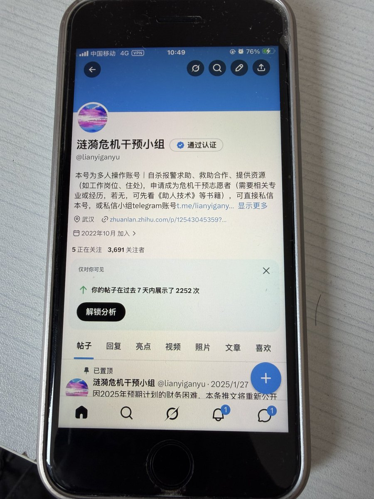
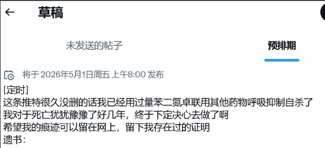
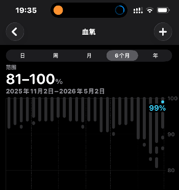

池鱼鱼🍥
@Chiyuyu520
其实本来打算4/30大量普瑞+氯硝西泮直接呼吸抑制死掉的
但是后来涟漪危机干预所以其实也没有死掉罢
因为之前也确实体验过小量这种药物联用可以呼吸抑制的很厉害
我之前推特发高铁喊不醒其实就是呼吸抑制罢
只是身边有人
目前不敢了，以后也许不一定



Asp.CR400BF-Z-0524🍥
@0524Asp
@Chiyuyu520 应该不是以死亡为目的的滥用吧…